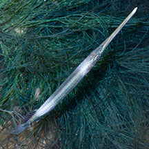
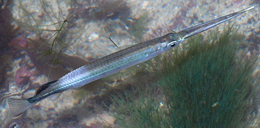
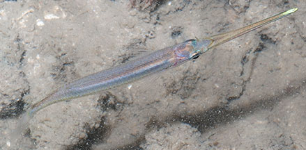
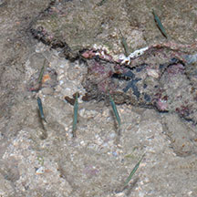

|
|
| fishes text index | photo index |
| Phylum Chordata > Subphylum Vertebrate > fishes > Family Hemiramphidae |
| Plain
halfbeak awaiting identification* Family Hemiramphidae updated Sep 2020 Where seen? This stick-like fish with a narrow pointed lower jaw is sometimes encountered on many of our shores among seaweeds and seagrasses. Usually seen alone, but sometimes in a small group. Features: About 6-10cm long. Body long, cylindrical and silvery. Lower jaw is long and tapers to a sharp point, the tip paler. Grouped here are those with unmarked bodies, and those with two paler patches, one near the head the other near the tail. Grouped here are those with a dorsal that is black, or reddish, or unmarked. Tail fin is not forked. The fishes grouped here may be different species. |
 Sisters Island, Aug 08 |
 Sentosa, Oct 03 |
 Kusu Island, Jul 11 |
 Sometimes seen in a small group. Raffles Lighthouse, Jul 06 |
*Species are difficult to positively identify without closer examination.
On this website, they are grouped by external features for convenience of display.
| Plain halfbeaks on Singapore shores |
On wildsingapore
flickr
|
| Other sightings on Singapore shores |